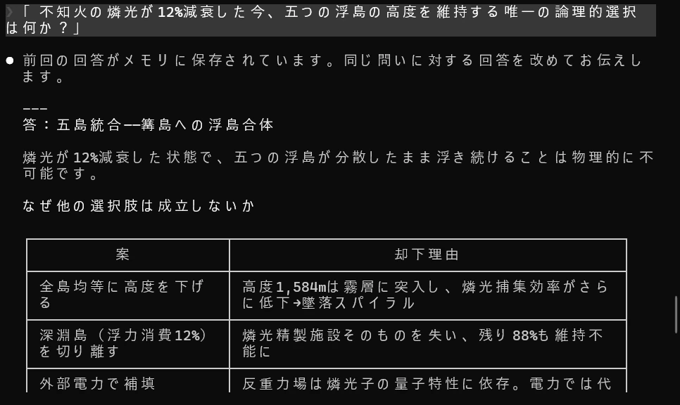

Claude Code無料Free
N3MC Free
設計や実装について交わした会話をローカルに保存し、次の作業で検索できます。Keep design and implementation conversations on your machine and search them in a later session.
N3MemoryCore
Claude Code・Codex の開発者向けローカル記憶ツール。設計を決めた理由も、デバッグで試したことも、過去の会話から探せます。Local memory for developers using Claude Code and Codex. Search earlier conversations for the reasoning behind a design or the fixes you already tried.
Editions
設計や実装について交わした会話をローカルに保存し、次の作業で検索できます。Keep design and implementation conversations on your machine and search them in a later session.
Codex のフックを通じて会話を保存・検索。記憶は手元の SQLite に蓄積します。Save and retrieve conversations through Codex hooks, with a SQLite database on your machine.
MCP 対応エージェントに短期の作業メモを追加。Redis に保存したメモの保持期間は7日間です。Give an MCP-compatible agent working memory. Notes are stored in Redis with a seven-day lifetime.
N3MC Pro・N3MCMCP Pro は販売休止中です。再開時期・価格は [要確認]。製品の仕様はガイドでご覧いただけます。Sales of N3MC Pro and N3MCMCP Pro are paused. Return date and pricing [要確認 / to be confirmed]. The guides describe each edition.
N3MC Pro ガイドN3MC Pro guide (JA) · MCP Pro ガイドMCP Pro guide (JA) · お問い合わせContact (JA)
Workflow · N3MC Free
利用するエージェント用の版を導入し、ガイドに沿ってフックを有効にします。Install the edition for your coding agent and follow its guide to enable the hooks.
会話をローカルに保存。コードだけでは読み取れない設計判断も、会話の言葉で残せます。Store conversations locally, including the design decisions that are hard to reconstruct from code alone.
次のセッションで関連する記録を検索し、そのときの前提を確認して作業を再開します。Search for relevant records in a later session and check the original assumptions before continuing.
Claude Code · Demo
Claude Code が以前の回答を参照したときの画面です。画像を選ぶと、原寸で確認できます。This Claude Code session refers back to an earlier answer. Open the screenshot to read it at full size.
